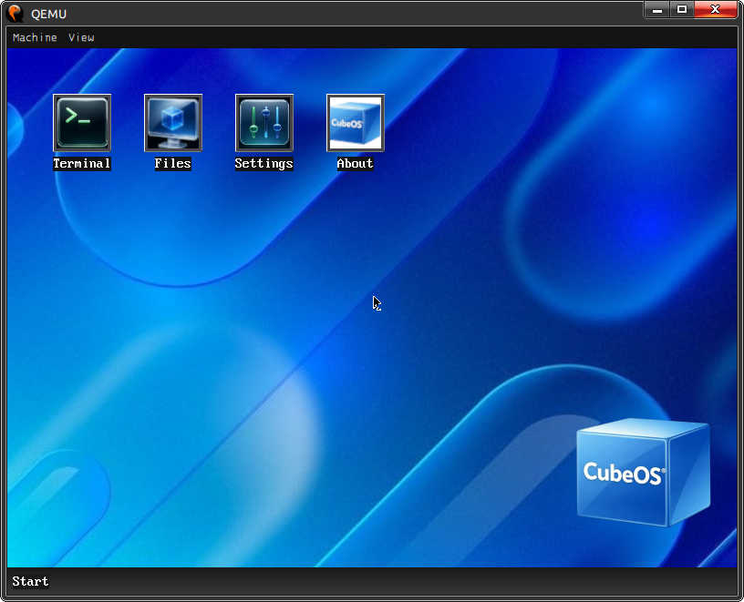
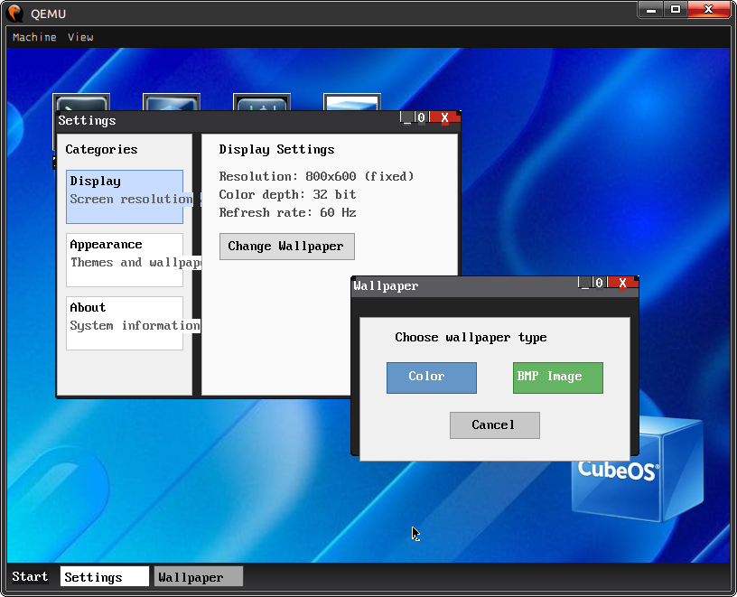
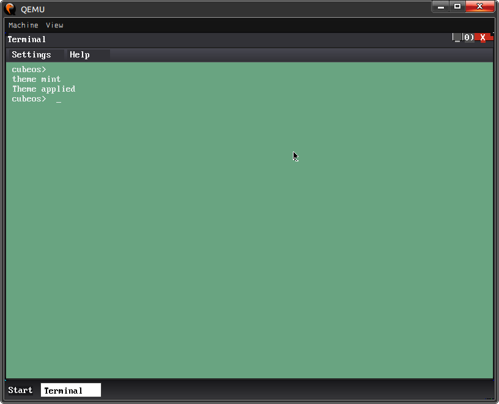
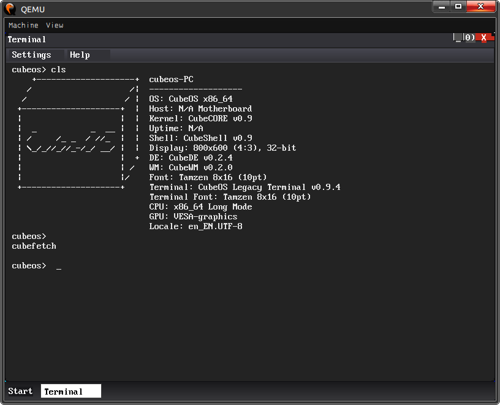

Графическая операционная система
Полноценная ОС с оконным менеджером, панелью задач, файловым менеджером, настройками и терминалом. Написана на Rust.
Оконный менеджер с перетаскиванием, сворачиванием и закрытием окон. Панель задач с кнопками окон. Меню «Пуск» с быстрым запуском.
Полная поддержка чтения и записи. Навигация по папкам, создание/удаление файлов и директорий.
Работа с жёсткими дисками через PIO-режим. Поддержка реального железа и эмуляции в QEMU.
Полноценный shell с историей команд. Цветовые темы. HEX-ввод для своих цветов.
Смена обоев (сплошные цвета и BMP). Переключение тем оформления. Информация о системе.
Калькулятор, текстовые команды. Защищённые BSOD и GSOD при сбоях.
| Команда | Описание |
|---|---|
help | Список всех команд |
ver | Версия системы |
mem | Информация о памяти |
cls / clear | Очистить экран |
dir / ls | Список файлов (если примонтирован диск) |
cd <папка> | Перейти в папку |
cubefetch | Информация о системе |
theme <имя> | Сменить тему терминала |
crash <0-31> | Вызвать исключение (для тестов) |
shutdown | Выключить ПК (ACPI) |



